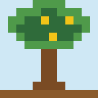
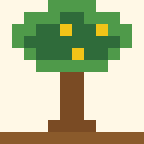

สวนพฤกษศาสตร์ไทย
สวนพฤกษศาสตร์ไทยราชพฤกษ์



- ชื่อไทย
- ราชพฤกษ์
- ชื่อวิทยาศาสตร์
- Cassia fistula
- วงศ์พืช
- Fabaceae
- ประเภทพืช
- ไม้ดอกไม้ประดับ
ลักษณะทั่วไป
ไม้ยืนต้นขนาดกลาง ผลัดใบ ปลูกเป็นไม้ให้ร่มและไม้ประดับ
ลักษณะทางพฤกษศาสตร์
ดอกสีเหลืองสด ออกเป็นช่อห้อยลง ผลเป็นฝักยาวทรงกระบอกสีน้ำตาลเข้ม เรียกว่าฝักคูณ
ถิ่นกำเนิดและการกระจายพันธุ์
พบในเอเชียใต้และเอเชียตะวันออกเฉียงใต้
สภาพแวดล้อมที่เหมาะสม
ชอบแดดจัด ดินร่วน ออกดอกมากในช่วงฤดูร้อน
วิธีปลูกและดูแล
เพาะเมล็ดหรือปลูกลงดินที่มีแสงเต็มวัน รดน้ำช่วงต้นกล้าให้สม่ำเสมอ
ส่วนที่นำมาใช้ประโยชน์
ดอก ฝัก และเนื้อไม้
การนำไปใช้
ปลูกประดับถนน วัด และสวน ใช้ดอกในงานตกแต่ง
สรรพคุณหรือประโยชน์
เป็นไม้ประดับที่ให้ความสวยงามและร่มเงา
คุณค่าทางวัฒนธรรม
คนไทยจัดว่าเป็นไม้มงคล โดยเชื่อว่าสื่อถึงความเป็นสิริมงคล นี่เป็นความเชื่อทางวัฒนธรรม ไม่ใช่ข้อเท็จจริงทางวิทยาศาสตร์
ข้อควรระวัง
ไม่ควรนำฝักหรือส่วนอื่นไปบริโภคเอง เพราะฝักมีผลระบายท้องและอาจทำให้เกิดอาการไม่สบายท้อง
เกร็ดความรู้
ราชพฤกษ์ได้รับการกำหนดให้เป็นดอกไม้ประจำชาติไทย
แหล่งอ้างอิง
ข้อมูลในหน้านี้เรียบเรียงเพื่อการเรียนรู้และยังไม่ได้ตรวจสอบทีละรายการกับเอกสารต้นฉบับ โปรดตรวจสอบเพิ่มเติมจาก Plants of the World Online และ สวนพฤกษศาสตร์สมเด็จพระนางเจ้าสิริกิติ์ ก่อนนำไปอ้างอิงในรายงาน